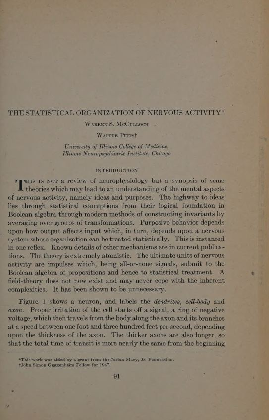
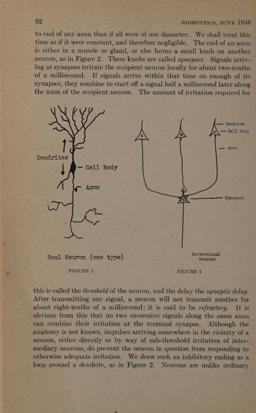
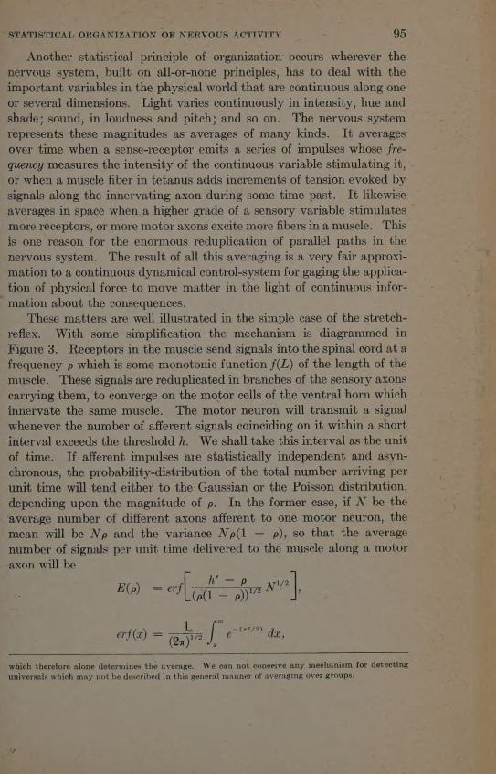
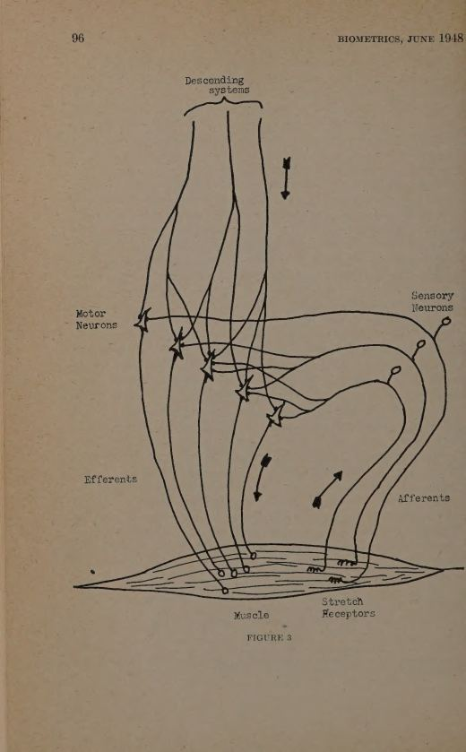

Propositions, timed
The actions of neurons and their mutual relations are described by the calculus of propositions subscripted for time.
Biometrics · Vol. 4 · 1948
A synopsis of the theory McCulloch and Pitts had built: atoms of impulse, Boolean logic, group averages, a stretch reflex that regulates itself, and a brain that chooses among ends. The elements are all-or-none; the order is statistical.
Read the plateThe thesis
The paper is not a review of neurophysiology. It is a synopsis of a theory of the mental aspects of nervous activity — ideas and purposes — built from all-or-none signals. The highway to ideas runs through statistical conceptions: from Boolean algebra, through invariants made by averaging over groups, to a nervous system that regulates itself by negative feedback.
The move is the same one as in 1943, but generalized. A neuron is still a proposition. A net is still a logic. What is new is the claim that the large-scale order of the system is statistical: rates, averages, populations, thresholds controlled from above. The all-or-none element is how the brain meets a continuous world.
Laboratory · the stretch reflex
Receptors in the muscle report length as a frequency. The spinal motor neuron fires when enough afferent impulses coincide. The muscle contracts, shortening the muscle and lowering the input. That is negative feedback: the output changes the input in the opposite direction. Move the load, or raise the central threshold, and the reflex finds a new equilibrium.
The sigmoid on the right is the motor neuron's input–output curve. Its inflection is the relative threshold ; its slope grows with the number of afferent channels. Cut the afferents and the loop opens.
The six conclusions
The actions of neurons and their mutual relations are described by the calculus of propositions subscripted for time.
The system as a whole is ordered on statistical principles, adjusting all-or-none elements to a continuous world.
Recognition is invariance: averages over groups of transformations, or a reflex that canonicalises the input.
Closed paths keep activity, body condition, and relation to the world stable: output changes input in the opposite direction.
Incompatible circuits inhibit one another. With three, dominance can be circular; values need no common measure.
Experience alters structure. Heredity lays down the general plan; the particulars are left to chance and use.
The curve
If afferent impulses are independent and asynchronous, the number arriving on a motor neuron in a unit interval is approximately Gaussian or Poisson. The probability that it exceeds the threshold is a sigmoid. Its inflection sits at the relative threshold; its slope grows with the square root of the number of afferent channels.
The motor neuron's curve. afferent channels, mean input , threshold . The output rate is sigmoid, monotonic, and runs from zero to one when .
The loop. If the load exceeds tension, the muscle lengthens; lengthening raises the afferent rate; the rate raises tension; tension pulls the length back. Equilibrium is where the two forces meet.
The voice
“The highway to ideas lies through statistical conceptions from their logical foundation in Boolean algebra through modern methods of constructing invariants by averaging over groups of transformations.”
“The nervous system as a whole is ordered and operated on statistical principles. Thereby it adjusts the all-or-none laws governing its elements to a physical world of continuous variation.”
“Heredity cannot fix the thresholds and connections of so many neurons. It can only lay down the general plan and leave particulars to chance. Experience brings order into this chaos.”
“This gradual ordering of the nervous system is like permanent magnetization in an originally unmagnetic bar of steel.”
“No higher structure alone can move muscles: it can only control the ‘central amplification’ of the elementary spinal reflex arc.”
The paper itself
click to enlarge




Why it matters
This paper is where the McCulloch–Pitts programme becomes a general theory of organization. Logic explains the element; statistics explains the population; feedback explains purpose. The same triad will reappear in cybernetics, in control theory, and in the design of every adaptive system that tries to hold a variable against a changing world.
It also contains the seed of a harder idea: that “higher” functions are not commands issued to lower ones, but gains set on lower loops. The cortex does not move the muscle. It changes the threshold at which the spinal reflex responds.